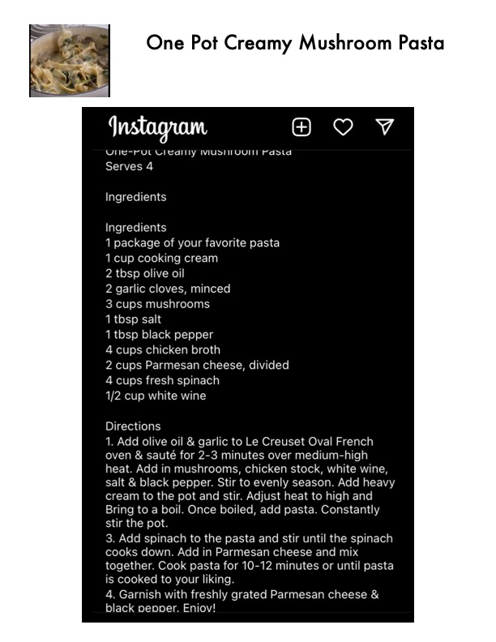

One Pot Creamy Mushroom Pasta

Original cookbook page 157
A creamy one-pot pasta dish with mushrooms, spinach, and Parmesan cheese
Cook: 10-12 minutes
Ingredients
- 1 package of your favorite pasta
- 1 cup cooking cream
- 2 tbsp olive oil
- 2 garlic cloves, minced
- 3 cups mushrooms
- 1 tbsp salt
- 1 tbsp black pepper
- 4 cups chicken broth
- 2 cups Parmesan cheese, divided
- 4 cups fresh spinach
- 1/2 cup white wine
Instructions
- Add olive oil & garlic to Le Creuset Oval French oven & sauté for 2-3 minutes over medium-high heat. Add in mushrooms, chicken stock, white wine, salt & black pepper. Stir to evenly season. Add heavy cream to the pot and stir. Adjust heat to high and bring to a boil. Once boiled, add pasta. Constantly stir the pot.
- Add spinach to the pasta and stir until the spinach cooks down. Add in Parmesan cheese and mix together. Cook pasta for 10-12 minutes or until pasta is cooked to your liking.
- Garnish with freshly grated Parmesan cheese & black pepper. Enjoy!
Recipe #157 from collection